Felica's Work
- 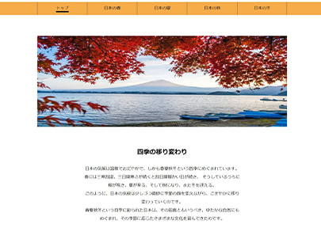
「日本の四季」
作成したHTMLをPHP化し、テーマに合わせた画像を配置。WordPress用に必要な固定ページを作成し、カスタムページテンプレート機能を使って
テーマデータ内の各phpデータと紐づけた後、デプロイ。
- 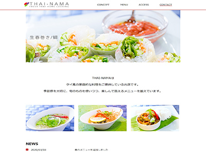
Thai-Nama
3つのブレイクポイントを設定し_(ｱﾝﾀﾞｰﾊﾞｰ)ファイルを作成。別ファイルで@forwardで呼び出し、共通の価を変数にすることにより、CSSよりシンプルに記述。
さらにGitHubのパブリックリポジトリーの可視性を設定。

「猫のことわざ」
PC4列、タブレット(横)3列、タブレット(縦)2列、スマホ1列のブレークポイントを@mixinで記述。
GitHubのパブリックリポジトリーの可視性を設定。
- 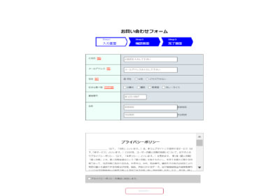
お問い合わせフォーム
inputタグの type属性で"text","email"をはじめ、
onKeyUpイベントを記述。
郵便番号を正しく入力することで住所の自動入力が可能。
- 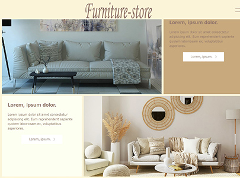
Furniture-store
モバイルファーストでレスポンシブ対応。widthをcalcで3分の1にした3カラムレイアウト。
CSSとJavaScriptでローディングアニメーションを実装。
Thai-Nama
3つのブレイクポイントを設定し_(ｱﾝﾀﾞｰﾊﾞｰ)ファイルを作成したレスポンシブデザイン。
共通の価を変数にすることにより、CSSよりシンプルに記述。
- 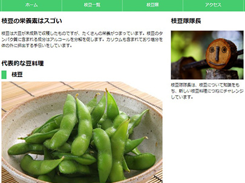
「枝豆隊長」
PCファーストで記述したレスポンシブデザイン。CSSに:rootでメインカラーを登録。
- 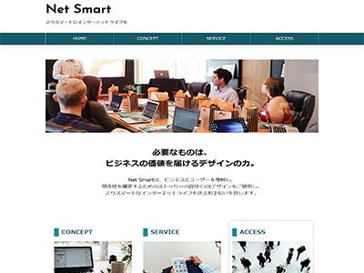
Net Smart
PCファーストで記述したレスポンシブデザイン。
CSSのtransformプロパティのscale()を使用して、マウスを置く画像が拡大。

Cafe de Felica
3枚の画像にbsSliderを実装。
お知らせのテキストは外部ファイル化し、更新しても常に最新の3件だけを表示。
- 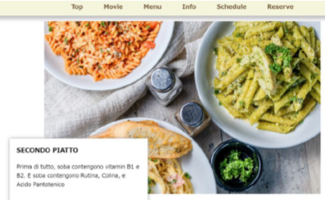
Ristorante Felica
AOSプラグインを実装し、3枚の画像とテキストを左右から時間差で表示。
youtube動画とgoogle mapを埋め込み、お知らせは外部ファイル化。
- 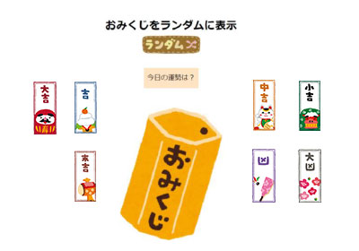
おみくじ
ランダム変数Math.ceil、Math.randomを使用し、getElementByIdメソッドで7種類の画像からランダムに取得。

onClick
OnClick属性を使用し、モノクロ画像クリックするとカラー画像に変化。
- 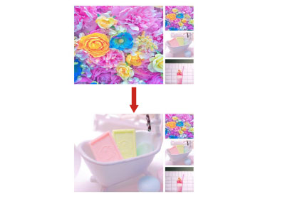
onMouseOver
onMouseOver属性を使用。
マウスをクリックすると小さい画像が大きな画像に変化。
- 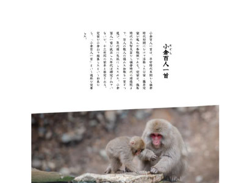
縦書きの練習
縦書きにするためにCSSのwriting-modeをvertical-rlにし、HTMLにruby要素でルビを付加。
- 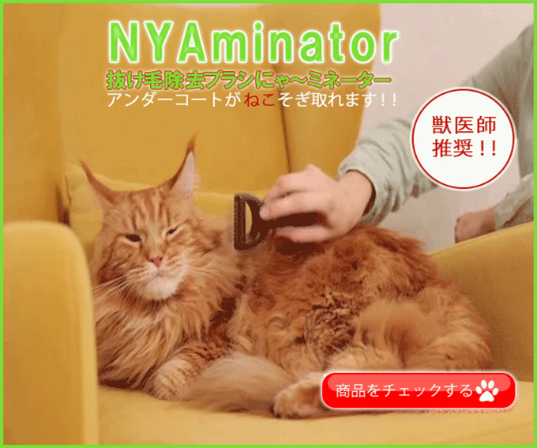
NYAminator
架空の犬猫用アンダーコート除去ブラシの動画バナー。
商品ラインナップが豊富なため右下の赤いボタンで次のページに誘導。
Photoshopのタイムラインを使用。
- 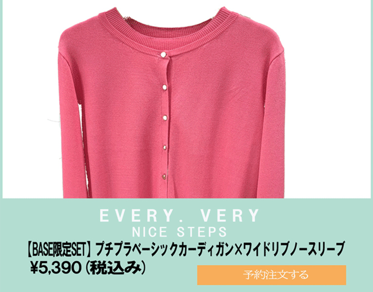
EVERY VERY NICE STEP
架空のレディースファッションのバナー。
20～30代の働く女性をターゲットにしており上品さを出すためにジャンプ率よりトンマナを重視し、実在のショップのコーポレートカラーで配色。
Photoshopのタイムラインのフレーム使用。
Videoの埋め込み
videoタグを使用しビデオを埋め込み。
ユーザーの自動再生を配慮し、autoplay muted loopを設定。
- 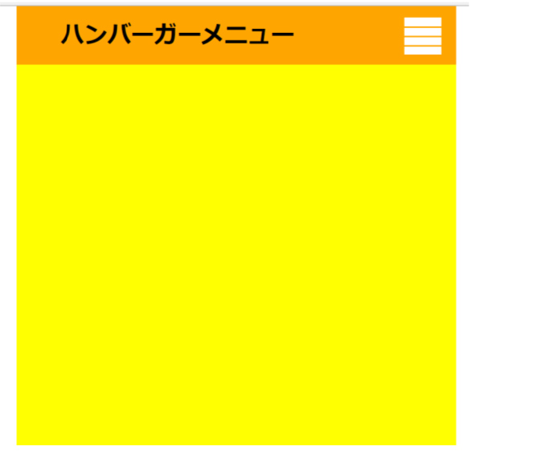
オリジナルハンバーガーメニュー
最初3本線のハンバーガーメニューの上と下の線をCSSでnth-of-childを使用してrotateさせて✕に。


.png)